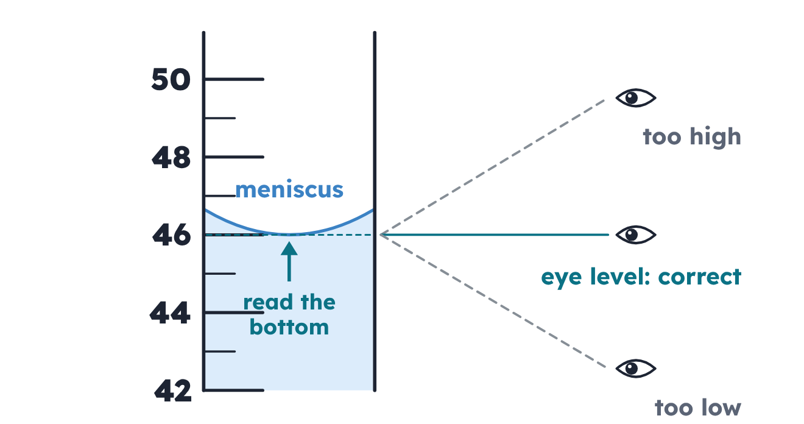
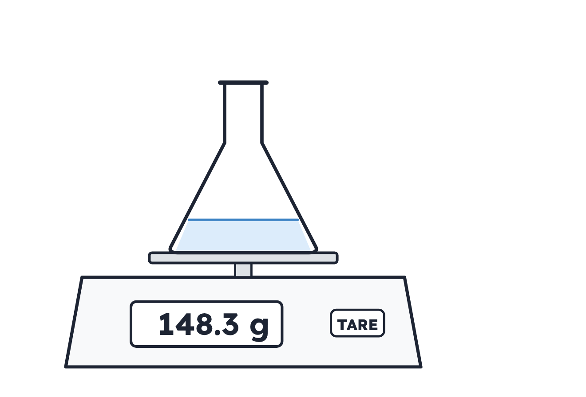

M1 Lesson 2 · Apparatus, volume and mass
MODULE 1 · LESSON 2 OF 3
Apparatus, volume and mass
Print pack 02
1▶️ Watch | 2✏️ Train on paper | 3🎯 Check |
1▶️ Watch
2✏️ Train on paper
👁️ Read the bottom of the meniscus · p 20

1 mL = 1 cm³
1 000 mL = 1 L
1 000 mL = 1 L
Eye level
Read the bottom of the meniscus, with your eye level with it.
Read the bottom of the meniscus, with your eye level with it.
⚖️ A balance measures mass

Mass Mass is the amount of matter in an object. | Unit grams (g) |
Common mistake: mass, not weight (p 15)
WRONG: “We use an electronic balance to measure weight.”
RIGHT: A balance measures mass, in grams (g).
Weight is a force, measured in newtons (N). You will meet it in Physics. In chemistry, say mass.
Reading a measuring cylinder (p 20)
- Find two numbered marks next to each other and count the spaces (not the lines) between them.
- Scale step = difference between the numbers ÷ number of spaces.
- Find the numbered mark just below the bottom of the meniscus and count the small spaces up to it.
- Reading = that number + (spaces × scale step). Write the unit.
Measuring mass (p 22)
Mass is the amount of matter in an object.
You measure it with an electronic balance, in grams (g).
- Put the empty container on the pan and press TARE (or zero) so the balance reads 0.0 g.
- Then add the substance and read every digit on the display.
3🎯 Check